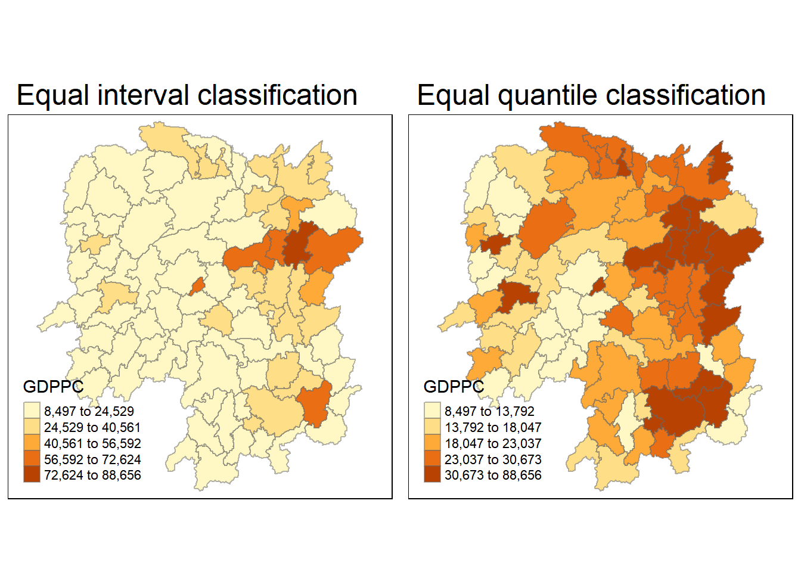
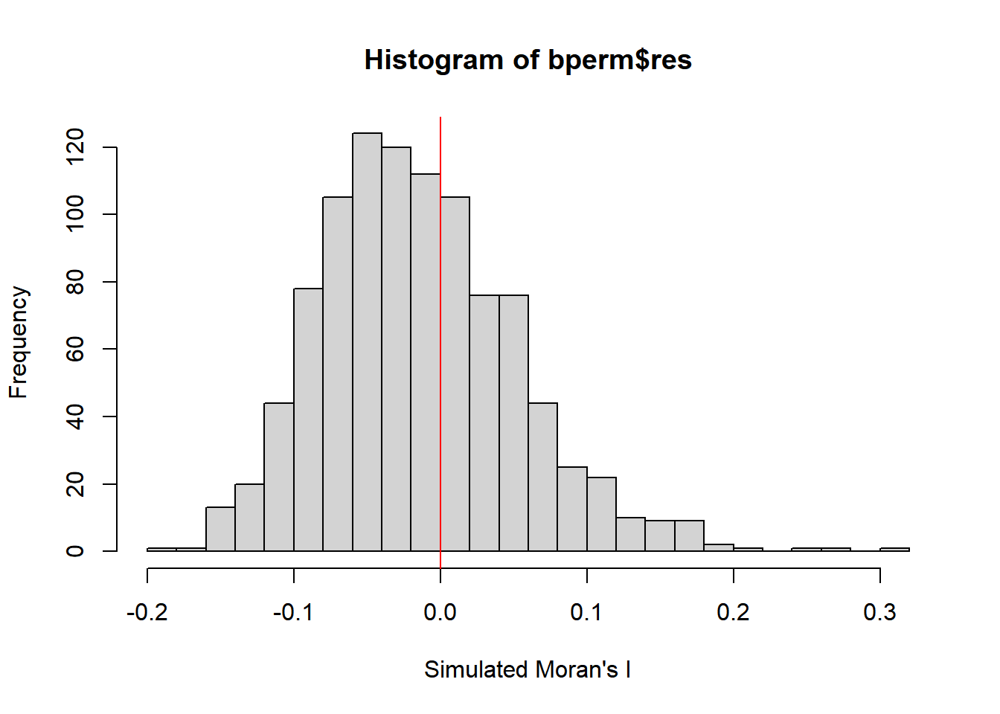
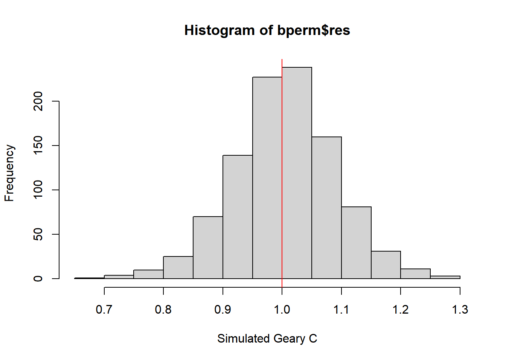
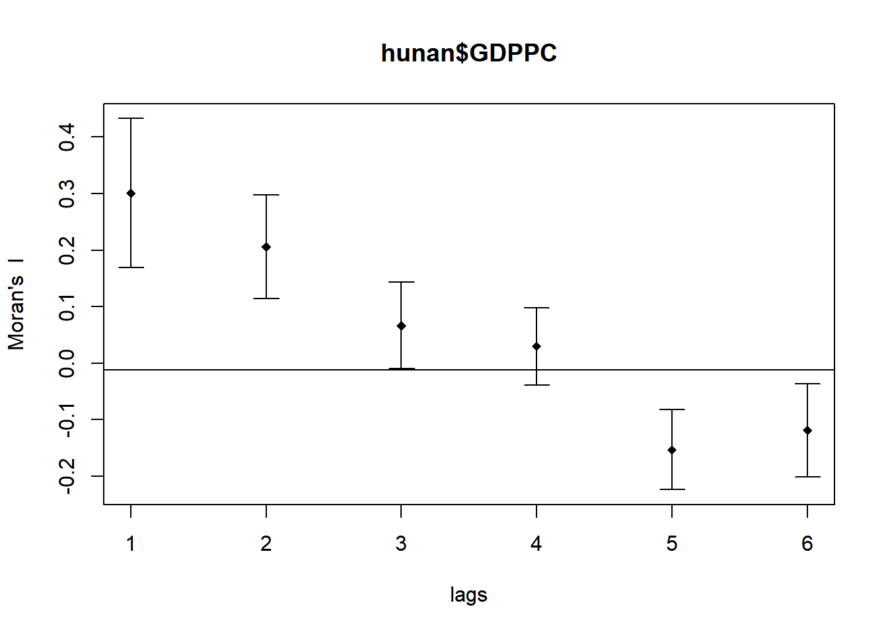
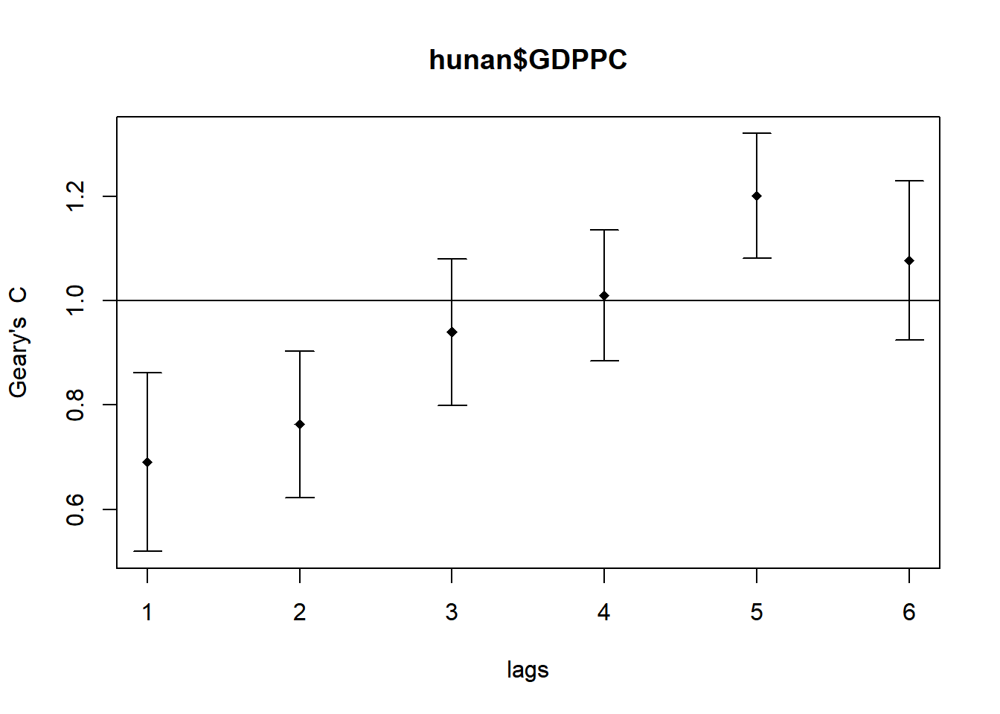

pacman::p_load(sf, sfdep, tmap, tidyverse, spdep)Getting Started
Overview
In this hands-on exercise, you will learn how to compute Global and Local Measure of Spatial Autocorrelation (GLSA) by using spdep package. By the end to this hands-on exercise, you will be able to:
import geospatial data using appropriate function(s) of sf package,
import csv file using appropriate function of readr package,
perform relational join using appropriate join function of dplyr package,
compute Global Spatial Autocorrelation (GSA) statistics by using appropriate functions of spdep package,
plot Moran scatterplot,
compute and plot spatial correlogram using appropriate function of spdep package.
compute Local Indicator of Spatial Association (LISA) statistics for detecting clusters and outliers by using appropriate functions spdep package;
compute Getis-Ord’s Gi-statistics for detecting hot spot or/and cold spot area by using appropriate functions of spdep package; and
to visualise the analysis output by using tmap package.
Research Questions
In spatial policy, one of the main development objective of the local government and planners is to ensure equal distribution of development in the province. Our task in this study, hence, is to apply appropriate spatial statistical methods to discover if development are even distributed geographically. If the answer is No. Then, our next question will be “is there sign of spatial clustering?”. And, if the answer for this question is yes, then our next question will be “where are these clusters?”
In this case study, we are interested to examine the spatial pattern of a selected development indicator (i.e. GDP per capita) of Hunan Provice, People Republic of China.(https://en.wikipedia.org/wiki/Hunan)
Installing and Loading Packages
Pacman assists us by helping us load R packages that we require, sf, sfdep, tmap and tidyverse.
The following packages assists us to accomplish the following:
sfdep helps to compute spatial weights, global and local spatial autocorrelation statistics
tmap provides functions to allow us to plot high quality static or interactive maps using leaflet API
Data Acquisition
The following datasets are used:
| Dataset Name | Source |
|---|---|
| Hunan (Hunan.shp) | Prof Kam |
| Hunan 2021 (Hunan-2021.csv) | Prof Kam |
Spatial Data Wrangling
Importing Geospatial Data
Using the code chunk below, we will import the Hunan shapefile into R as sf data frame.
hunan <- st_read(dsn = "Hands-on_Ex05/data/geospatial",
layer = "Hunan")Reading layer `Hunan' from data source
`C:\renjie-teo\IS415-GAA\exercises\Hands-on_Ex05\data\geospatial'
using driver `ESRI Shapefile'
Simple feature collection with 88 features and 7 fields
Geometry type: POLYGON
Dimension: XY
Bounding box: xmin: 108.7831 ymin: 24.6342 xmax: 114.2544 ymax: 30.12812
Geodetic CRS: WGS 84Importing Geospatial Data
Using the code chunk below, we will import Hunan_2012.csv into R, which reults in a R data frame.
hunan2012 <- read_csv("Hands-on_Ex05/data/aspatial/Hunan_2012.csv")Perfoming Relational Join
The hunan2012.csv provides attributes that we want to combine with our shapefile. To do this, we can do a left join as shown in the code chunk, before selecting the columns that we want to retain.
hunan <- left_join(hunan, hunan2012) %>%
select(1:4, 7, 15)Visualising Regional Development Indicator
Next, we will prepare a chloropleth map to show the distribution of GDPPC in Hunan in 2012.
equal <- tm_shape(hunan) +
tm_fill("GDPPC",
n = 5,
style = "equal") +
tm_borders(alpha = 0.5) +
tm_layout(main.title = "Equal interval classification")
quantile <- tm_shape(hunan) +
tm_fill("GDPPC",
n = 5,
style = "quantile") +
tm_borders(alpha = 0.5) +
tm_layout(main.title = "Equal quantile classification")
tmap_arrange(equal,
quantile,
asp=1,
ncol=2)
Global Spatial Autocorrelation
In In-Class Exercise 6, we have learnt how to calculate Contiguity Spatial Weights usingt he Queen’s method. Now, we will apply that to get our first order neighbours using the Queen criteria.
Computing Contiguity Spatial Weights
Using the sfdep package with with mutate() and st_contiguity() and st_weights(), it performs the necessary tasks, to obtain the contiguity weights and then row-standardised weight matrix.
By default, the code chunk below will assign each neighbouring with equal weight (style=“W”)
wm_q <- hunan %>%
mutate(nb = st_contiguity(geometry),
wt = st_weights(nb),
.before = 1)summary(wm_q)Neighbour list object:
Number of regions: 88
Number of nonzero links: 448
Percentage nonzero weights: 5.785124
Average number of links: 5.090909
Link number distribution:
1 2 3 4 5 6 7 8 9 11
2 2 12 16 24 14 11 4 2 1
2 least connected regions:
30 65 with 1 link
1 most connected region:
85 with 11 links nb wt.Length wt.Class wt.Mode NAME_2 ID_3
NULL:NULL 5 -none- numeric Length:88 Min. :21098
5 -none- numeric Class :character 1st Qu.:21125
4 -none- numeric Mode :character Median :21150
4 -none- numeric Mean :21150
4 -none- numeric 3rd Qu.:21174
5 -none- numeric Max. :21201
4 -none- numeric
7 -none- numeric
6 -none- numeric
8 -none- numeric
3 -none- numeric
5 -none- numeric
4 -none- numeric
3 -none- numeric
4 -none- numeric
5 -none- numeric
7 -none- numeric
5 -none- numeric
6 -none- numeric
7 -none- numeric
5 -none- numeric
5 -none- numeric
7 -none- numeric
5 -none- numeric
5 -none- numeric
4 -none- numeric
3 -none- numeric
5 -none- numeric
3 -none- numeric
1 -none- numeric
8 -none- numeric
8 -none- numeric
5 -none- numeric
3 -none- numeric
6 -none- numeric
6 -none- numeric
4 -none- numeric
4 -none- numeric
5 -none- numeric
6 -none- numeric
6 -none- numeric
7 -none- numeric
6 -none- numeric
4 -none- numeric
6 -none- numeric
3 -none- numeric
5 -none- numeric
5 -none- numeric
4 -none- numeric
5 -none- numeric
3 -none- numeric
5 -none- numeric
3 -none- numeric
6 -none- numeric
5 -none- numeric
7 -none- numeric
6 -none- numeric
5 -none- numeric
4 -none- numeric
4 -none- numeric
7 -none- numeric
3 -none- numeric
4 -none- numeric
2 -none- numeric
1 -none- numeric
5 -none- numeric
4 -none- numeric
5 -none- numeric
3 -none- numeric
3 -none- numeric
3 -none- numeric
5 -none- numeric
5 -none- numeric
6 -none- numeric
6 -none- numeric
7 -none- numeric
7 -none- numeric
7 -none- numeric
7 -none- numeric
8 -none- numeric
6 -none- numeric
5 -none- numeric
9 -none- numeric
6 -none- numeric
11 -none- numeric
9 -none- numeric
4 -none- numeric
2 -none- numeric
NAME_3 ENGTYPE_3 County GDPPC
Length:88 Length:88 Length:88 Min. : 8497
Class :character Class :character Class :character 1st Qu.:14566
Mode :character Mode :character Mode :character Median :20433
Mean :24405
3rd Qu.:27224
Max. :88656
geometry
POLYGON :88
epsg:4326 : 0
+proj=long...: 0
From the summary report, we can see that there are 88 area units, with the most connected area unit having 11 neighbours.
Global Spatial Correlation
Moran’s I Test
The code chunk below performs Moran’s I statistical testing using global_moran_test() of sfdep.
Our hypothesis formulated is as follows:
Ho = The observations of spatial pattern of GDPPC values in Hunan are randomly distributed.
H1= The observations of spatial pattern of GDPPC values in Hunan are not randomly distributed.
The null hypothesis will be rejected is p-value is smaller than alpha value of 0.001.
global_moran_test(hunan$GDPPC,
wm_q$nb,
wm_q$wt)
Moran I test under randomisation
data: x
weights: listw
Moran I statistic standard deviate = 4.7351, p-value = 1.095e-06
alternative hypothesis: greater
sample estimates:
Moran I statistic Expectation Variance
0.300749970 -0.011494253 0.004348351 From the code, since the p-value is < 0.001, we reject the null hypothesis
Computing Monte Carlo Moran’s I
set.seed(1234)
bperm = global_moran_perm(hunan$GDPPC,
wm_q$nb,
wm_q$wt,
nsim = 999,
zero.policy = TRUE,
na.action = na.omit)
bperm
Monte-Carlo simulation of Moran I
data: x
weights: listw
number of simulations + 1: 1000
statistic = 0.30075, observed rank = 1000, p-value < 2.2e-16
alternative hypothesis: two.sidedSince I (0.300749970) > 0, there appears to be clustering in Hunan, China and observations tend to be similar.
Visualising Monte Carlo Moran’s I
We can better visualise Moran’s I test statistics in greater detail by plotting the distrubtion of statistical values as a histogram using the code chunk below.
mean(bperm$res[1:999])[1] -0.01504572var(bperm$res[1:999])[1] 0.004371574summary(bperm$res[1:999]) Min. 1st Qu. Median Mean 3rd Qu. Max.
-0.18339 -0.06168 -0.02125 -0.01505 0.02611 0.27593 hist(bperm$res,
freq = TRUE,
breaks = 20,
xlab = "Simulated Moran's I")
abline(v = 0,
col = "red")
Global Spatial Autocorreclation: Geary’s
Geary’s C Test
In this section, we will use global_c_test() from sfdep to conudct Geary’s C Test
Our hypothesis formulated is as follows:
Ho = The observations of spatial pattern of GDPPC values in Hunan are randomly distributed.
H1= The observations of spatial pattern of GDPPC values in Hunan are not randomly distributed.
The null hypothesis will be rejected is p-value is smaller than alpha value of 0.001.
global_c_test(hunan$GDPPC,
wm_q$nb,
wm_q$wt)
Geary C test under randomisation
data: x
weights: listw
Geary C statistic standard deviate = 3.6108, p-value = 0.0001526
alternative hypothesis: Expectation greater than statistic
sample estimates:
Geary C statistic Expectation Variance
0.6907223 1.0000000 0.0073364 From the code, since the p-value is < 0.001, we reject the null hypothesis
Computing Monte Carlo Geary’s C
set.seed(1234)
bperm = global_c_perm(hunan$GDPPC,
wm_q$nb,
wm_q$wt,
nsim = 999)
bperm
Monte-Carlo simulation of Geary C
data: x
weights: listw
number of simulations + 1: 1000
statistic = 0.69072, observed rank = 1, p-value = 0.001
alternative hypothesis: greaterSince C (0.69072) < 1, there appears to be clustering in Hunan, China and observations tend to be similar.
Visualising the Monte Carlo Gerary’s C
mean(bperm$res[1:999])[1] 1.004402var(bperm$res[1:999])[1] 0.007436493summary(bperm$res[1:999]) Min. 1st Qu. Median Mean 3rd Qu. Max.
0.7142 0.9502 1.0052 1.0044 1.0595 1.2722 hist(bperm$res, freq = TRUE, breaks = 20, xlab = "Simulated Geary C")
abline(v = 1, col = "red")
Spatial Correlogram
Spatial correlograms are great to examine patterns of spatial autocorrelation in your data or model residuals. They show how correlated are pairs of spatial observations when you increase the distance (lag) between them - they are plots of some index of autocorrelation (Moran’s I or Geary’s c) against distance.Although correlograms are not as fundamental as variograms (a keystone concept of geostatistics), they are very useful as an exploratory and descriptive tool. For this purpose they actually provide richer information than variograms.
Compute Moran’s I Correlogram
As sfdep does not offer a method to plot the correlogram, we will be using sp.correlogram() of spdep package. Thereafter, we use plot to plot the output of the graph
MI_corr <- sp.correlogram(wm_q$nb,
hunan$GDPPC,
order=6,
method="I",
style="W")
plot(MI_corr)
The plot does not allow us to fully interpret the autocorrelation values as some of the values might not be statistically significant. Hence, we should print the analysis results using the code below.
print(MI_corr)Spatial correlogram for hunan$GDPPC
method: Moran's I
estimate expectation variance standard deviate Pr(I) two sided
1 (88) 0.3007500 -0.0114943 0.0043484 4.7351 2.189e-06 ***
2 (88) 0.2060084 -0.0114943 0.0020962 4.7505 2.029e-06 ***
3 (88) 0.0668273 -0.0114943 0.0014602 2.0496 0.040400 *
4 (88) 0.0299470 -0.0114943 0.0011717 1.2107 0.226015
5 (88) -0.1530471 -0.0114943 0.0012440 -4.0134 5.984e-05 ***
6 (88) -0.1187070 -0.0114943 0.0016791 -2.6164 0.008886 **
---
Signif. codes: 0 '***' 0.001 '**' 0.01 '*' 0.05 '.' 0.1 ' ' 1<analyse>
Plot Geary’s C Correlogram and Plot
As sfdep does not offer a method to plot the correlogram, we will be using sp.correlogram() of spdep package. Thereafter, we use plot to plot the output of the graph
GC_corr <- sp.correlogram(wm_q$nb,
hunan$GDPPC,
order=6,
method="C",
style="W")
plot(GC_corr)
The plot does not allow us to fully interpret the autocorrelation values as some of the values might not be statistically significant. Hence, we should print the analysis results using the code below.
print(GC_corr)Spatial correlogram for hunan$GDPPC
method: Geary's C
estimate expectation variance standard deviate Pr(I) two sided
1 (88) 0.6907223 1.0000000 0.0073364 -3.6108 0.0003052 ***
2 (88) 0.7630197 1.0000000 0.0049126 -3.3811 0.0007220 ***
3 (88) 0.9397299 1.0000000 0.0049005 -0.8610 0.3892612
4 (88) 1.0098462 1.0000000 0.0039631 0.1564 0.8757128
5 (88) 1.2008204 1.0000000 0.0035568 3.3673 0.0007592 ***
6 (88) 1.0773386 1.0000000 0.0058042 1.0151 0.3100407
---
Signif. codes: 0 '***' 0.001 '**' 0.01 '*' 0.05 '.' 0.1 ' ' 1<analyse>